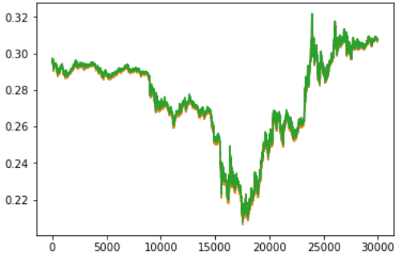

Incase you haven't, please do read the first three blogs here.
Keras.jl, continued
The week started with continuing working on Keras.jl ops. My target was to implement more
operators and examples for time series forecasting in Keras(with Flux backend). I worked on these
operators, and two demos for univariate time series analysis:
1. Stock market price prediction.
2. Bitcoin price prediction.
Operators implemented:
Most operators I worked on were related to Natural Language Processing, LSTMs. These include:
1. Conv1D (Temporal Convolutions)
2. MaxPool1D
2. AveragePool1D
3. I worked on rewriting the Conv2D op, after identifying a few bottlenecks in it, which I had been
overlooking.
Models implemented:
I. Text Generation using LSTMs (continued):
Text generation, in general, consists of training a model on any text dataset, such that the model learns useful patterns from the data. After training for a while, the model starts outputting words that make sense as a standalone entity. LSTMs (Long Short Term Memory) networks have proven to be very effective in this case. They are capable of remembering the relation among sequences over long distances, which makes them ideal for text generation. The Keras model I created was trained on the Alice in Wonderland text, which isn't protected under any copyright/license. The model was trained to take as input as sequence of 100 characters, and predict the next one. Tracing Keras LSTM to Flux LSTM was quite challenging, as they handle input in different ways. I was able to load the model successfully in Flux and the output, after training for just 15 epochs was pretty decent.
Original text: went straight on like a tunnel for some way, and then
dipped suddenly down, so suddenly that alice had not a mome
Produced text: went straight on like a tunnel for some way, and then
dipped suddenly down, so suddenly that alice had not a mome tf the fand,
she wast on toineng an thre of the garter. whe mone dater and soen an an
ar ien so the toede an the coold an thee, th shen io the want toon if the
woil, and yhu io the whre tie dorse ’hu aoh yhu than i soned th thi would
be no tee thet
Notice that the output might not make sense, but it was able to produce familiar words, such as she, the on, of, and, an, so etc. from the training text. It is advisable to train the model for at least 25 epochs to get better results.
Time series analysis related models:
As mentioned above, I implemented two time series models:
I. Stock market price prediction:
The aim was to predict the price of stock market opening on a given day, using the opening, closing, high and
low data for the previous 30 days. The dataset was taken from Kaggle.LSTMs were present at the heart of the model. The LSTM input was a (1, 30, 4)
dimensional data, where 30 presents the timesteps, and 4 reflects the input dimension per timestep. The Keras
code, corresponding model with Flux backend can be found here.
Running the model is pretty simple, (also mentioned in the README.md):
-
From the terminal, execute python main.py. This generates the model structure, model weights, and a few other files.
Again, run julia main.jl. This will load and display the predictions.
II. Bitcoin price prediction:
The dataset was again taken from Kaggle. The aim was to predict the price of bitcoin on a particular day, given the price at the previous few days. The code can be found here. The results were pretty good:

The green curve displays the actual price of bitcoin, whereas if you observe closely, the red curve indicated the predicted value, by the LSTM. As you can see, the results are pretty close.